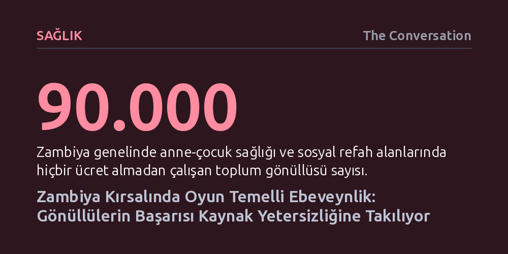

SAGLIK · The Conversation · 2026-09-08
Zambiya kırsalında yürütülen erken çocukluk programı, toplum gönüllülerinin desteğiyle uygulanan oyun temelli ebeveynliğin çocuk gelişiminde hızla sonuç verdiğini, ancak yetersiz finansman ve lojistik eksikliğin sürdürülebilirliği kısıtladığını gösteriyor. Başarının kalıcılaşması, sağlık ve eğitim sektörleri arasındaki güçlü eşgüdüme ve gönüllülere yönelik kamu yatırımlarına bağlı.
Pahalı araçlar yerine gündelik etkileşimlere dayanan erken çocukluk modellerinin kırsal yoksulluk koşullarında bile işe yaradığını, ancak tabandaki gönüllü emeğinin kurumsal kaynak ve lojistikle desteklenmedikçe tek başına yetmeyeceğini kanıtlıyor.

Çocuğun yaşamındaki ilk yıllar; zihinsel kapasitenin, öğrenme yetisinin ve uzun vadeli refahın temellerinin atıldığı kritik bir dönemi oluşturur. Bu evrede beyin olağanüstü bir hızla gelişirken aile içindeki deneyimler ve çevreyle kurulan temas, çocuğun ilerleyen yaşlardaki sağlık, eğitim ve sosyal başarısını doğrudan şekillendirir. Ancak yaygın kanının aksine erken dönem gelişimini hızlandırmak için pahalı oyuncaklara ya da özel araç gereçlere ihtiyaç yoktur; çocukla konuşmak, şarkı söylemek, masal anlatmak ve evdeki sıradan malzemelerle oyun kurmak beyindeki nöronal bağlantıların güçlenmesi için son derece etkilidir.
Zambiya Sağlık Bakanlığı, UNICEF ve ortak kuruluşlar, bu yaklaşımdan yola çıkarak 2019 yılında ülkenin Doğu Eyaleti'nde 0-3 yaş arası bebekleri ve ailelerini hedefleyen bir oyun temelli ebeveynlik programı başlattı. Yoksulluk ve yetersiz beslenmeyle mücadele eden kırsal topluluklarda devletin erken çocukluk hizmetlerine yeterince bütçe ayıramadığı bir ortamda, bu girişim desteği doğrudan ailelerin evine taşıyarak yerel imkânlarla çocuk gelişimini teşvik etmeyi amaçladı.
Programın sahadaki omurgasını, Zambiya genelinde anne-çocuk sağlığından aşı takibine kadar birçok alanda hiçbir ücret almadan çalışan 90 bin kişilik gönüllü ağının parçası olan yerel temsilciler oluşturdu. Kendi yaşadıkları köylerde hizmet veren bu gönüllüler, kültürel dokuyu yakından bildikleri için ailelerle hızla güven bağı kurdu. Ev ziyaretleri düzenleyerek ebeveynlere oyunla öğrenmenin pratik yollarını gösterdiler, beslenme desteği sağladılar ve kırılgan durumdaki çocukları tespit edip sağlık kuruluşlarına yönlendirdiler.
Girişimin en belirgin kazanımlarından biri, kırsal topluluklardaki geleneksel aile rollerinde yarattığı dönüşüm oldu. Eğitimler sayesinde anneler sadece eş bakımı üzerine kurulu geleneksel kalıpların dışına çıkarak çocuk yetiştirme konusunda birbirlerine rehberlik etmeye başladı; babaların da evde çocukla oyun oynaması ve duygusal bağ kurması teşvik edildi. Üstelik köyün geleneksel liderlerinin, öğretmenlerin ve sağlık çalışanlarının sürece sahip çıkması, toplumun programa katılımını ve bağlılığını kayda değer biçimde artırdı.
Program toplum tarafından hızla benimsenip yerel düzeyde kurumlar arası iş birliği sağlansa da araştırmacıların sahadan elde ettiği veriler ciddi yapısal engelleri gözler önüne serdi. Kırsal Zambiya'da erken çocukluk hizmetlerine yapılan kamu yatırımlarının düşüklüğü, saha çalışanlarının hareket alanını daraltan temel etken olarak öne çıktı. Personel eksikliği, bütçe kısıtları ve eğitimlerin sürekliliğinin sağlanamaması, elde edilen kazanımların kalıcı hale gelmesini zorlaştırdı.
Bu kaynak yetersizliğinin sahadaki en somut yansıması ise ulaşım imkânsızlıklarında görüldü. Bir saha görevlisinin durumu özetleyen şu sözü tablodaki tezatı açıkça ortaya koyuyor: "Yalnızca 3 bisikletimiz var ama 39 toplum gönüllüsüyüz, bu yüzden ulaşım ciddi bir sorun." Geniş ve engebeli kırsal arazilerde köyler arasında mekik dokuyan gönüllülerin temel lojistikten dahi yoksun bırakılması, her aileye düzenli ulaşılmasını imkânsız hale getirdi.
Halk sağlığı ve sağlık ekonomisi uzmanlarının yürüttüğü araştırma, erken çocukluk gelişiminde toplum temelli modellerin yüksek potansiyel taşıdığını ancak sistemin yalnızca gönüllülerin fedakârlığına yaslanarak sürdürülemeyeceğini ortaya koyuyor. Oyun temelli ebeveynliğin kalıcı bir kalkınma politikasına dönüşmesi için hükümetin bu alandaki bütçe payını artırması ve gönüllüleri düzenli eğitim, ekipman ve lojistik kaynaklarla desteklemesi şart.
Bunun yanı sıra sağlık, eğitim ve sosyal hizmetler birimlerinin birbirinden kopuk çalışmak yerine erken çocukluk politikalarında ortak bir koordinasyon mekanizması işletmesi gerekiyor. Zambiya deneyimi, nerede doğarsa doğsun her çocuğun potansiyelini gerçekleştirebilmesi için düşük maliyetli pedagojik çözümlerin mutlaka sağlam bir kurumsal altyapı ve kamu finansmanıyla taçlandırılması gerektiğini gösteriyor.